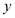
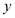
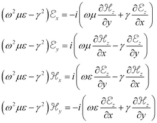
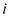
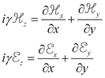
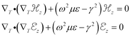
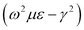
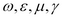
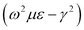
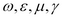

|
Homogeneous Waveguides |

  
|
|
Homogeneous Waveguides |
|
In many cases, the waveguide under analysis consists of a metal casing, either empty or filled homogeneously with an isotropic dielectric. In these cases, the analysis can be simplified.
Eq. (3.3) can be expanded using (3.5) and rearranged to express the transverse  and  components in terms of the axial
and  components in terms of the axial  components
components  and
and  .
.
(3.6) 
The  in the right hand side corresponds to a phase shift of  in the expansion (3.1).
in the expansion (3.1).
Applying, the divergence equations of (3.3) become
(3.7) ,
so the  component equations of (3.4) are
component equations of (3.4) are
(3.8)  .
.
These are eigenvalue equations in  and
and  , and the values of  for which solutions exist constitute the propagation constants of the unattenuated propagation modes that can be supported in the guide under analysis. For any eigenvalue, there are an infinite number of combinations of  which can excite this mode, and the exact determination will depend on the materials and the driving frequency.
, and the values of  for which solutions exist constitute the propagation constants of the unattenuated propagation modes that can be supported in the guide under analysis. For any eigenvalue, there are an infinite number of combinations of  which can excite this mode, and the exact determination will depend on the materials and the driving frequency.
Page url: index.html?homogeneous_waveguides.html